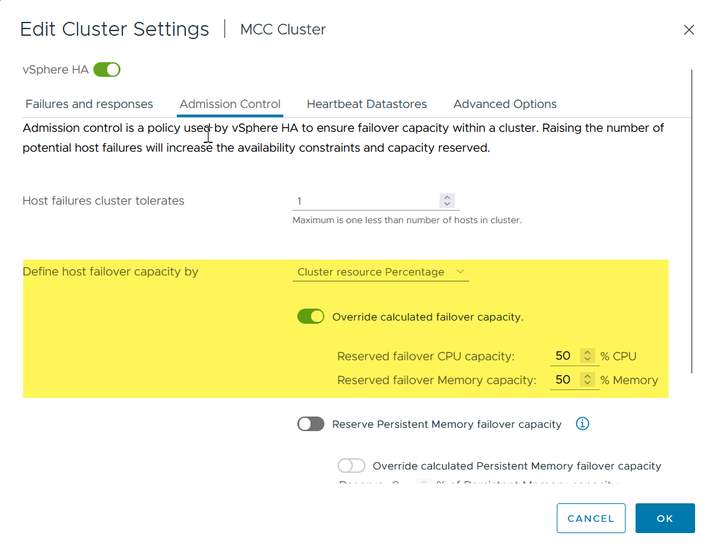
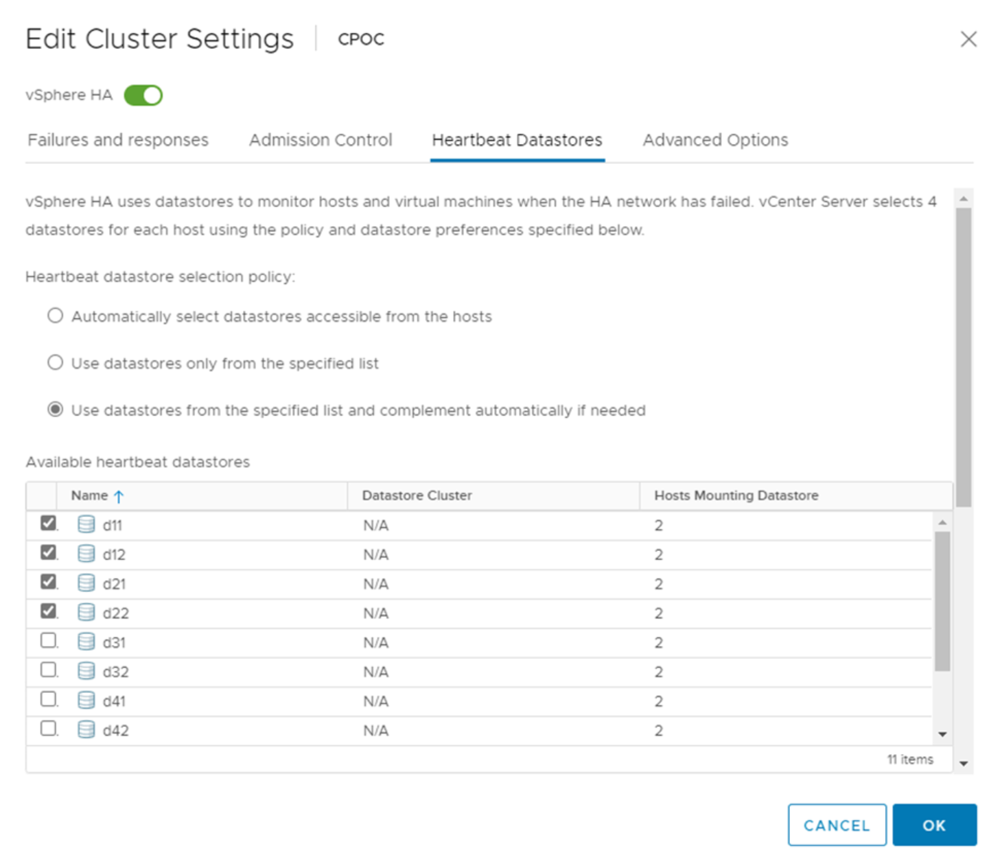
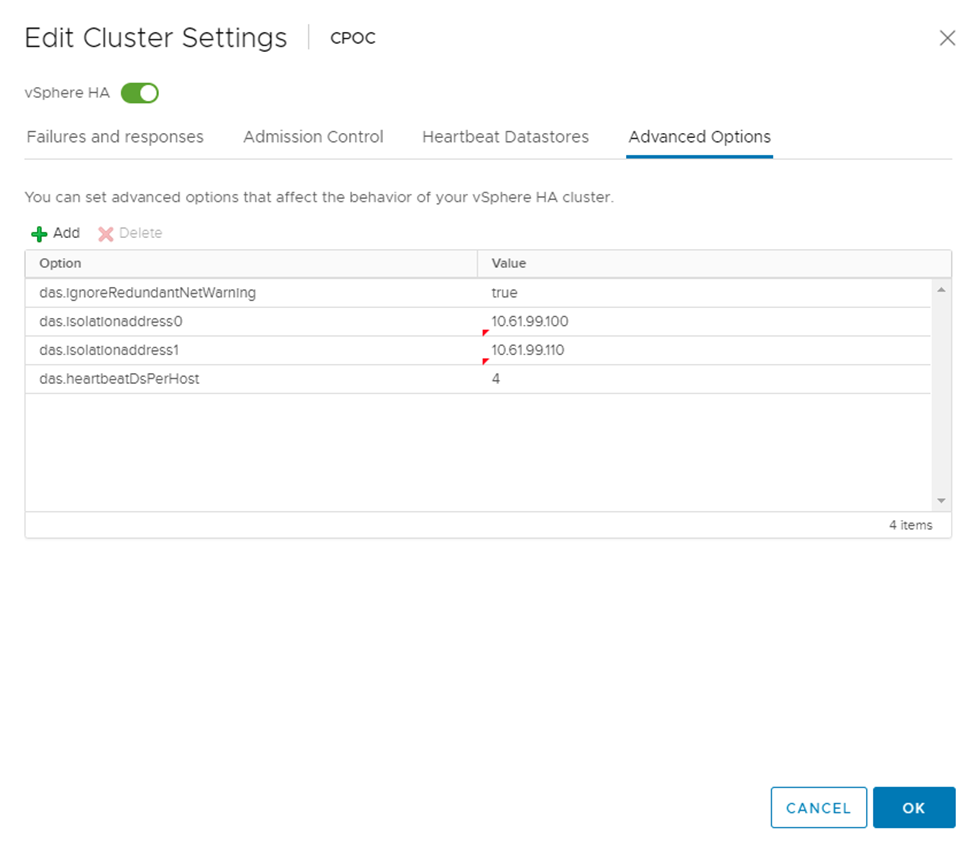
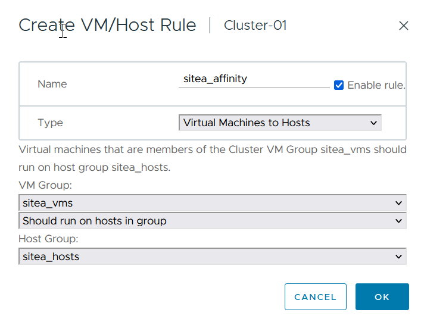
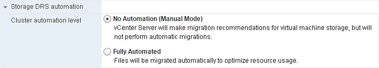
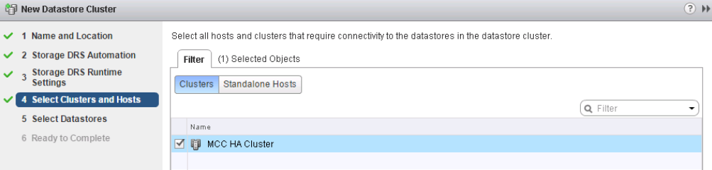

Microsoft SQL Server
Microsoft SQL Server
Linee guida per la progettazione e l'implementazione di vMSC
 Suggerisci modifiche
Suggerisci modifiche
Questo documento delinea le linee guida di progettazione e implementazione per vMSC con i sistemi di storage ONTAP.
Configurazione dello storage NetApp
Le istruzioni per l'installazione di NetApp MetroCluster (definite configurazione MCC) sono disponibili all'indirizzo "Documentazione MetroCluster". Le istruzioni per la sincronizzazione attiva di SnapMirror sono disponibili all'indirizzo "Panoramica di SnapMirror Business Continuity".
Una volta configurato MetroCluster, gestirlo è come gestire un ambiente ONTAP tradizionale. Puoi configurare Storage Virtual Machine (SVM) utilizzando vari strumenti come l'interfaccia a riga di comando (CLI), System Manager o Ansible. Una volta configurate le SVM, occorre creare nel cluster interfacce logiche (LIF), volumi e LUN (Logical Unit Number) da utilizzare per le normali operazioni. Questi oggetti verranno replicati automaticamente sull'altro cluster utilizzando la rete di peering del cluster.
Se non utilizzi MetroCluster, puoi usare SnapMirror Active Sync che offre protezione granulare dei datastore e accesso Active-Active su diversi cluster ONTAP in diversi domini di errore. SnapMirror Active Sync utilizza gruppi di coerenza per garantire la coerenza dell'ordine di scrittura in uno o più datastore. Puoi creare più gruppi di coerenza in base ai requisiti di applicazioni e datastore. I gruppi di coerenza sono particolarmente utili per le applicazioni che richiedono la sincronizzazione dei dati tra datastore multipli. La sincronizzazione attiva di SnapMirror supporta inoltre RDM (Raw Device Mapping) e storage connesso al guest con initiator iSCSI in-guest. Per ulteriori informazioni sui gruppi di coerenza, visitare il sito Web all'indirizzo "Panoramica dei gruppi di coerenza".
Esiste una certa differenza nella gestione di una configurazione vMSC con sincronizzazione attiva SnapMirror rispetto a una MetroCluster. In primo luogo, si tratta DI una configurazione solo SAN, ma non è possibile proteggere datastore NFS con la sincronizzazione attiva di SnapMirror. In secondo luogo, è necessario mappare entrambe le copie delle LUN agli host ESXi per accedere ai datastore replicati in entrambi i domini di errore.
VMware vSphere ha
Creare un cluster vSphere ha
La creazione di un cluster vSphere ha è un processo in più fasi documentato all'indirizzo "Come creare e configurare i cluster nel client vSphere su docs.vmware.com". In poche parole, devi prima creare un cluster vuoto, quindi, utilizzando vCenter, devi aggiungere host e specificare l'ha vSphere del cluster e le altre impostazioni.
Nota: nulla di quanto contenuto nel presente documento sostituisce "Procedure consigliate per VMware vSphere Metro Storage Cluster"
Per configurare un cluster ha, completare i seguenti passaggi:
-
Connettersi all'interfaccia utente di vCenter.
-
In host e cluster, individuare il data center in cui si desidera creare il cluster ha.
-
Fare clic con il pulsante destro del mouse sull'oggetto del data center e selezionare nuovo cluster. In base alle nozioni di base, assicurarsi di aver abilitato vSphere DRS e vSphere ha. Completare la procedura guidata.

-
Selezionare il cluster e accedere alla scheda di configurazione. Selezionare vSphere ha e fare clic su Modifica.
-
In monitoraggio host, selezionare l'opzione attiva monitoraggio host.

-
Nella scheda guasti e risposte, in monitoraggio VM, selezionare l'opzione solo monitoraggio VM o monitoraggio VM e applicazione.

-
In controllo ammissione, impostare l'opzione di controllo ammissione ha su Cluster Resource Reserve; utilizzare 50% CPU/MEM.

-
Fare clic su "OK".
-
Selezionare DRS e fare clic su MODIFICA.
-
Impostare il livello di automazione su manuale, a meno che non sia richiesto dalle applicazioni.

-
Abilitare la protezione dei componenti VM, fare riferimento a. "docs.vmware.com".
-
Le seguenti impostazioni aggiuntive di vSphere ha sono consigliate per vMSC con MCC:
| Guasto | Risposta |
|---|---|
Errore host |
Riavviare le VM |
Isolamento degli host |
Disattivato |
Datastore con perdita permanente di dispositivi (PDL) |
Spegnere e riavviare le macchine virtuali |
Datastore con tutti i percorsi verso il basso (APD) |
Spegnere e riavviare le macchine virtuali |
L'ospite non batte il cuore |
Ripristinare le VM |
Policy di riavvio della VM |
Determinato dall'importanza della VM |
Risposta per l'isolamento dell'host |
Arrestare e riavviare le VM |
Risposta per il datastore con PDL |
Spegnere e riavviare le macchine virtuali |
Risposta per datastore con APD |
Spegnere e riavviare le macchine virtuali (conservative) |
Ritardo del failover delle macchine virtuali per APD |
3 minuti |
Risposta per il ripristino APD con timeout APD |
Disattivato |
Sensibilità di monitoraggio VM |
Preimpostazione alta |
Configurare gli archivi dati per Heartbeating
VSphere ha utilizza i datastore per monitorare gli host e le macchine virtuali in caso di guasto alla rete di gestione. È possibile configurare in che modo vCenter seleziona i datastore heartbeat. Per configurare gli archivi dati per il heartbeat, completare i seguenti passaggi:
-
Nella sezione Heartbeating del datastore, selezionare Usa archivi dati dall'elenco specificato e completare automaticamente se necessario.
-
Seleziona i datastore che desideri utilizzare vCenter da entrambi i siti e premi OK.

Configurare le opzioni avanzate
Rilevamento errori host
Gli eventi di isolamento si verificano quando gli host all'interno di un cluster ha perdono la connettività alla rete o ad altri host nel cluster. Per impostazione predefinita, vSphere ha utilizzerà il gateway predefinito per la propria rete di gestione come indirizzo di isolamento predefinito. Tuttavia, è possibile specificare indirizzi di isolamento aggiuntivi per l'host al ping per determinare se deve essere attivata una risposta di isolamento. Aggiungere due IP di isolamento in grado di eseguire il ping, uno per sito. Non utilizzare l'indirizzo IP del gateway. L'impostazione avanzata vSphere ha utilizzata è das.isolationaddress. A tale scopo, è possibile utilizzare gli indirizzi IP ONTAP o Mediator.
Fare riferimento a. "core.vmware.com" per ulteriori informazioni.

L'aggiunta di un'impostazione avanzata denominata das.heartbeatDsPerHost può aumentare il numero di datastore heartbeat. Utilizzare quattro datastore heartbeat (HB DSS), due per sito. Utilizzare l'opzione "Select from List but complent" (Seleziona da elenco ma complimento). Questo è necessario perché se un sito non funziona, è necessario ancora due HB DSS. Tuttavia, questi elementi non devono essere protetti con la sincronizzazione attiva di MCC o SnapMirror.
Fare riferimento a. "core.vmware.com" per ulteriori informazioni.
Affinità con VMware DRS per NetApp MetroCluster
In questa sezione vengono creati gruppi DRS per VM e host per ciascun sito/cluster nell'ambiente MetroCluster. Quindi configuriamo le regole VM\host per allineare l'affinità dell'host VM con le risorse di storage locali. Ad esempio, il sito A fa parte del gruppo VM sitea_VM e gli host del sito A appartengono al gruppo host sitea_hosts. Successivamente, in VM\host Rules, si afferma che sitea_vm deve essere eseguito sugli host in sitea_hosts.
Best practice
-
NetApp consiglia vivamente la specifica deve essere eseguita sugli host nel gruppo piuttosto che sulla specifica deve essere eseguita sugli host nel gruppo. In caso di guasto dell'host del sito A, è necessario riavviare le macchine virtuali del sito A sugli host del sito B attraverso vSphere ha, ma quest'ultima specifica non consente all'ha di riavviare le macchine virtuali sul sito B perché è una regola rigida. La specifica precedente è una regola debole e viene violata in caso di ha, abilitando in tal modo la disponibilità anziché le prestazioni.
Nota: è possibile creare un allarme basato su eventi che viene attivato quando una macchina virtuale viola una regola di affinità VM-host. Nel client vSphere, aggiungere un nuovo allarme per la macchina virtuale e selezionare "VM viola la regola di affinità VM-host" come trigger dell'evento. Per ulteriori informazioni sulla creazione e la modifica degli allarmi, fare riferimento a. "Monitoraggio e performance di vSphere" documentazione.
Creare gruppi host DRS
Per creare gruppi di host DRS specifici per il sito A e il sito B, attenersi alla seguente procedura:
-
Nel client web vSphere, fare clic con il pulsante destro del mouse sul cluster nell'inventario e selezionare Impostazioni.
-
Fare clic su VM\host Groups.
-
Fare clic su Aggiungi.
-
Digitare il nome del gruppo (ad esempio, sitea_hosts).
-
Dal menu tipo, selezionare Gruppo host.
-
Fare clic su Aggiungi e selezionare gli host desiderati dal sito A, quindi fare clic su OK.
-
Ripetere questi passaggi per aggiungere un altro gruppo di host per il sito B.
-
Fare clic su OK.
Creare gruppi DRS VM
Per creare gruppi di macchine virtuali DRS specifici per il sito A e il sito B, attenersi alla seguente procedura:
-
Nel client web vSphere, fare clic con il pulsante destro del mouse sul cluster nell'inventario e selezionare Impostazioni.
-
Fare clic su VM\host Groups.
-
Fare clic su Aggiungi.
-
Digitare il nome del gruppo (ad esempio, sitea_vm).
-
Dal menu tipo, selezionare Gruppo VM.
-
Fare clic su Add (Aggiungi) e selezionare le VM desiderate dal sito A, quindi fare clic su OK.
-
Ripetere questi passaggi per aggiungere un altro gruppo di host per il sito B.
-
Fare clic su OK.
Crea regole host VM
Per creare regole di affinità DRS specifiche per il sito A e il sito B, completare i seguenti passaggi:
-
Nel client web vSphere, fare clic con il pulsante destro del mouse sul cluster nell'inventario e selezionare Impostazioni.
-
Fare clic su VM\host Rules.
-
Fare clic su Aggiungi.
-
Digitare il nome della regola (ad esempio, sitea_Affinity).
-
Verificare che l'opzione Enable Rule (attiva regola) sia selezionata.
-
Dal menu Type (tipo), selezionare Virtual Machines to hosts (macchine virtuali a host).
-
Selezionare il gruppo VM (ad esempio, sitea_vm).
-
Selezionare il gruppo host (ad esempio, sitea_hosts).
-
Ripetere questi passaggi per aggiungere un'altra VM\regola host per il sito B.
-
Fare clic su OK.

VMware vSphere Storage DRS per NetApp MetroCluster
Creare cluster di datastore
Per configurare un cluster di datastore per ciascun sito, attenersi alla seguente procedura:
-
Utilizzando il client web vSphere, individuare il data center in cui risiede il cluster ha in Storage.
-
Fare clic con il pulsante destro del mouse sull'oggetto del data center e selezionare Storage > New Datastore Cluster.
-
Selezionare l'opzione Turn ON Storage DRS (ATTIVA DRS archiviazione) e fare clic su Next (Avanti).
-
Impostare tutte le opzioni su Nessuna automazione (modalità manuale) e fare clic su Avanti.
Best practice
-
NetApp consiglia di configurare i DRS dello storage in modalità manuale, in modo che l'amministratore possa decidere e controllare quando è necessario eseguire le migrazioni.

-
Verificare che la casella di controllo Enable i/o Metric for SDRS Recommendations (Abilita metriche i/o per raccomandazioni SDRS) sia selezionata; le impostazioni metriche possono essere lasciate con i valori predefiniti.

-
Selezionare il cluster ha e fare clic su Next.

-
Selezionare gli archivi dati appartenenti al sito A e fare clic su Avanti.

-
Rivedere le opzioni e fare clic su fine.
-
Ripetere questa procedura per creare il cluster di datastore del sito B e verificare che siano selezionati solo i datastore del sito B.
Disponibilità di vCenter Server
Le appliance vCenter Server (VCSA) devono essere protette con vCenter ha. VCenter ha ti consente di implementare due VCSA in una coppia ha Active-passive. Uno in ogni dominio di errore. Puoi leggere ulteriori informazioni su vCenter ha all'indirizzo "docs.vmware.com".